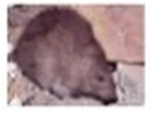
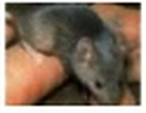
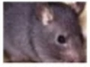
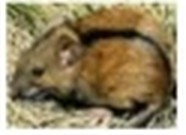

쥐
| 생김새 | 크기 | 활동시기 및 서식장소 | 습성/생활 |
|---|---|---|---|
 시궁쥐 | 몸길이 22cm~26cm 꼬리길이17cm~20cm 몸무게300~400g | 1년 내내 활동하며 부엌 및 가옥 안의 식량창고,마루밑,하수도,천장, 벽틈 등에서 많이 서식함 | 전국적으로 가장 널리 분포되어 있어 먹이를 구할수 있는곳이면 어디서든 발견되며 연3~5회정도 출산하며 임신기간은 약24일 한번에 4~10마리정도 출산을 한다. 쥐는 먹이와 물이 있는 조용한 곳이면 어디든지 서식처가 되며 보통 천정과 마루 이중벽사이, 가구나 쌓아놓은 저장물 밑 등에서 많이 서식한다.쥐는 갉지 않으면 치아가 빠르게 성장하여 아무것도 먹지못한채 죽게 된다. 보통 나무나 콘크리트 알루미늄,옷감,스티로폴,종이박스 등을 갉으며 특히 전선줄을 갉아 누전이나 합선을 일으켜 큰화재가 되어 문제가 되기도 한다. 가주성쥐는 사람의 음식물에 많이 의존하여 잡식성으로 바뀌었으며 보통 주변에서 얻기 쉬운 먹이를 좋아하며 적응한다. |
 생쥐 | 몸길이 6cm~10cm 귀길이 1.1cm~1.4cm 뒷발 길이1.3cm1.8cm | 1년 내내 활동하며 도시에 많이 분포되어 있음 | 생쥐 성체늬 무게는 약 20g정도이며, 두동장은 80~120mm, 고리도 두동장과 비슷하다. 털은 배면이 갈색이고, 복면은 회색이다. 생쥐의 성체는 시궁쥐,곰쥐 새끼와 비슷하여 식별이 어려운 편이다. |
 곰쥐, 집웅쥐 | 몸길이 6cm~10cm 뒤밭길이 1.1cm~1.4cm 꼬리길이17cm이상 | 1년 내내 활동하며 집안 창고나 부엌, 마루밑, 하수도,천장이나, 벽틈 등에서 많이 서식 | 털빛깔은 갈색 검은색을 띠며 농촌이나 항구지역에 많이 분포되 었었으나 현재 도시 빌딩내에서도 많이 증가하는 추세이며 식성은 식물성이지만 서식하는 장소에 따라 식성이 변하며 동작이 매우 빠르고 나무도 잘란다고 한다. 보통 임신은 약26일에 거쳐 5~10마리정도의 새끼를 출산한다. |
 등줄쥐 | 몸길이 7cm~12cm 뒤박길이 1,5cm~2.5cm 꼬리길이5.2cm~9.6cm | 1년 내내 활동하며 농촌지역이나 산에서 주로 서식하며 습하지 않은 곳이면 어디든 살수 있다. | 등 면은 적갈색이며 몸 아랫 쪽은 회백색을 띤다. 검은 줄이 머리부터 꼬리 아랫쪽 까지 있으며. 꼬리는 몸 길이보다 짧고 굵은 털이 나있으며 귀가 작다. 1년에 4~5회 한배에 4~8마리 정도의 새끼를 출산하며 보통 2월에서 11월에 많이나타남. |
쥐가 옮길 수 있는 질병
- 쥐는 한 쌍만 있으면 1년에 1,250마리로 번식을 하며 0.7cm의 틈만 있으며 어디든지 침입할 수 있다. 1km까지 수영이 가능하며. 주로 좁은 틈이나 배관, 배선 등을 이용하여 이동하며 개체 수가 많아 지면 쥐는 같은 동족을 잡아먹기 때문에 서식처를 새로운 곳으로 옮기며 영역을 넓힌다.
- 쥐의 이빨은 계속 자라게 되어 갈지 않으며 죽게 되므로 뭐든 갉는 습성이 있으며 가끔 전선 등을 갉아 합선을 일으켜 큰 화재를 일으키기도 한다.
- 식성은 잡식성이나 새로운 물체나 음식에 대한 경계심은 강하며. 쥐는 배변으로 음식물을 오염시켜 식중독 등의 전염병을 유발하며 유행성 출혈열, 서교열, 랩토스피아 등의 병원체를 옮기기도 한다.
시궁쥐
- 시궁쥐는 집쥐라고하며, 전세계적으로 분포한다. 성체는 체중이 400~500g정도 이며, 꼬리 길이는 160~200mm이고, 두동장(머리+몸통)이 190~250mm보다 짧다. 털은 배면은 회갈색이고, 복면은 회색이며, 귀는 작아서 앞으로 접어도 눈에 닿지 않는다.눈도 몸집에 비해 작고, 코는 비교적 뭉뚝하다.
- 서식장소는 주로 가옥내 창고, 부엌, 쓰레기처리장이나 하수구주변에서 주로 살며, 마을 주면의 논둑이나 밭둑의 땅속에 굴을 파고 산다
생쥐
- 생쥐 성체늬 무게는 약 20g정도이며, 두동장은 80~120mm, 고리도 두동장과 비슷하다. 털은 배면이 갈색이고, 복면은 회색이다. 생쥐의 성체는 시궁쥐,곰쥐 새끼와 비슷하여 식별이 어려운 편이다. 특징이 있다면 시궁쥐나 곰쥐에 비해 생쥐는 머리에 비해 귀는 크고, 발이 작으며 꼬리가 날씬하다.
곰쥐, 집웅쥐
- 곰쥐는 지붕쥐,애급쥐라고도 한다. 성체의 체중은 시궁쥐보다 약간 가벼운 30~400g정도이고, 몸통도 약간 날씬하며 꼬리가 두동장보다 길다. 귀는 털이 거의 없으며 얇고 커서 접으면 눈에까지 달한다.
등줄쥐
- 등줄쥐는 국내에 서식하는 야생들쥐 중에서 절대적인 우점종의 위치를 차지하고 있으며, 신증후군 출혈열의 병원체인 hantavirus의 보균동물이다. 생김새는 머리부터 꼬리의 기부가지 검은줄이 있어 쉽게 구별된다.
- 주서식장소는 주로 농작물을 재배하는 경작지, 황무지, 산 밑, 산중턱이나 산 정상에서도 발견되며, 굴을 S자형으로 1~2m파고 그속에 둥지를 만들고 산다. 월동용으로 식량을 저장하는 습성이 없어서 겨울에도 먹이를 찾아 활동한다. 전체 들쥐의 개체수 중 약80~90%를 차지한다.